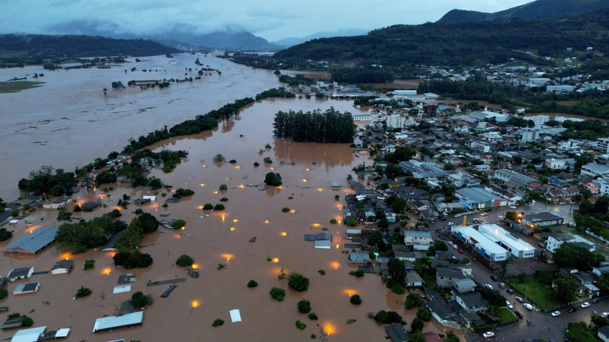

Monitoramento de Enchentes
Acompanhe em tempo real o nível das águas em diferentes regiões e saiba quando tomar medidas de segurança.
Ver StatusEste site oferece informações cruciais para proteger você e sua família durante eventos de enchentes, além de conectar você a centros de abrigo e voluntários em momentos de emergência.
Encontre informações essenciais para manter você e sua família seguros durante enchentes. Acesse orientações, rotas de evacuação, centros de abrigo e apoio voluntário em momentos críticos.
Acompanhe em tempo real o nível das águas em diferentes regiões e saiba quando tomar medidas de segurança.
Ver StatusInformações essenciais para se preparar antes, durante e depois de uma enchente.
Acessar GuiaConfira as rotas seguras para evacuação em caso de enchente.
Ver RotasVeja os abrigos mais próximos e disponíveis para evacuação.
AbrigosAjude pessoas afetadas com doações ou se inscreva como voluntário.
Conectar-seAcompanhe em tempo real o status de risco de enchentes em diferentes regiões. Mantenha-se informado e seguro!
| Região | Status de Risco | Nível | Ações Recomendadas |
|---|---|---|---|
| Porto Alegre | Risco Alto | ⚠️⚠️⚠️ | Evacuação Recomendável |
| Canoas | Risco Moderado | ⚠️⚠️ | Fique Atento |
| Pelotas | Risco Baixo | ⚠️ | Nenhuma Ação Necessária |
⚠️ Atualização automática a cada 30 minutos. Mantenha-se atualizado sobre o status da sua região.